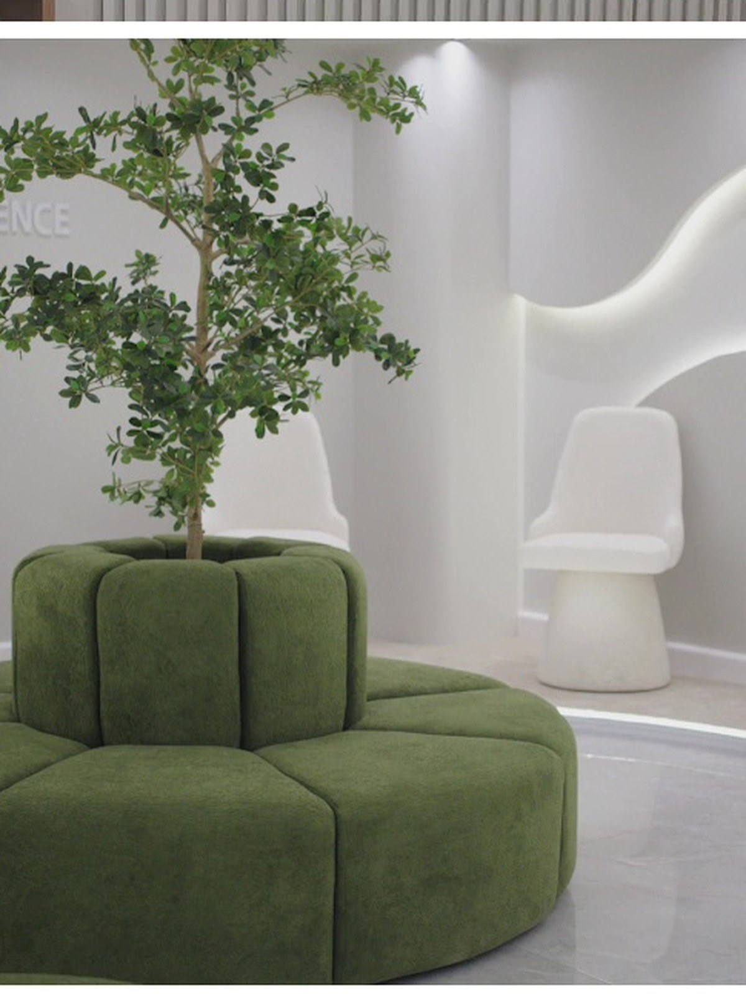

« Est-ce le bon endroit ? »
Une première impression qui montre immédiatement l'univers de Fusion et situe la clinique.
Découverte
BABA HASSEN · ALGER
EXPÉRIENCE PATIENTQuand un patient découvre Fusion sur Google ou Instagram, la première question n'est pas « quel est votre site ? ». C'est : « Est-ce le bon endroit pour moi ? »

LE POINT DE DÉPART
Le digital n'a pas besoin de réinventer la clinique. Il doit prolonger ce que le patient va ressentir : clarté, confiance, qualité d'accueil et une prochaine étape évidente.
PATIENT JOURNEY
Le parcours réduit la friction au lieu d'ajouter des pages.
Une première impression qui montre immédiatement l'univers de Fusion et situe la clinique.
Les soins sont lisibles, regroupés et présentés sans obliger le patient à fouiller plusieurs canaux.
Environnement réel, avis publics et informations claires : la preuve arrive avant la demande de rendez-vous.
Une action évidente, accessible depuis le téléphone, sans chercher le numéro ou revenir à Google.
Parler à Fusion →CE QUE CELA CHANGE
Le rôle du digital est de faire une partie du travail avant que le patient arrive à l'accueil.
Les informations essentielles sont réunies dans un parcours unique.
Les preuves et l'environnement apparaissent avant le moment de contact.
Le téléphone reste à portée de main quand le patient est prêt.
LES SOINS
Les catégories ci-dessous reprennent exactement les services visibles sur la fiche Google de Fusion au moment de la recherche.
L'ESPACE
Le digital n'a pas besoin d'inventer une ambiance : il peut simplement la faire ressentir avant la visite.


LA PREUVE EXISTE DÉJÀ
La fiche Google de Fusion affiche déjà une note de 4,7/5 sur 213 avis. Le rôle d'un parcours digital est de rapprocher cette preuve du moment où le patient hésite.
 LE DÉTAIL
LE DÉTAILCLARTÉ AVANT LE CONTACT
Une image clinique peut aider le patient à se projeter. Elle ne remplace ni une consultation ni un diagnostic : elle prépare simplement le premier échange.
PROCHAINE ÉTAPE
Le prototype montre une direction. La version complète connecterait chaque étape aux canaux choisis par Fusion.
Concept d'expérience digitale personnalisé pour Fusion Dental Clinic.
Prototype de direction · Les contenus médicaux définitifs, photos officielles et modalités de rendez-vous restent à valider avec l'équipe.